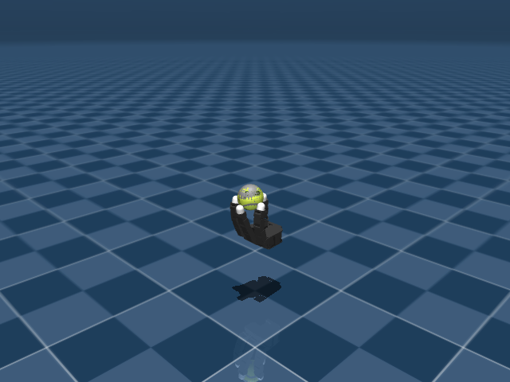

Allegro In-Hand Rotation
任务目标
训练 Allegro Hand 在手内旋转球体，使球沿指定轴获得目标角速度，同时维持稳定抓持。

图片由
_tools/render_static_images.py使用src/unilab/assets/robots/allegro_hand/scene.xml的 MuJoCo scene 离屏渲染生成；如果当前环境无法启用 EGL/OSMesa，生成 manifest 会记录失败原因。
证据索引
| 项目 | 内容 |
|---|---|
| 任务类别 | 灵巧操作 |
| 机器人 | allegro_hand |
| 代表 scene | src/unilab/assets/robots/allegro_hand/scene.xml |
| 代表源码 | src/unilab/envs/manipulation/allegro_inhand/rotation.py |
| 代表 owner YAML | conf/appo/task/allegro_inhand/mujoco.yaml |
| 动作维度 | 16 |
Registry 与 Owner
| 注册名 | 后端 | 配置类 | 配置源码 |
|---|---|---|---|
| AllegroInhandRotation | motrix, mujoco | AllegroRotationPPOCfg | src/unilab/envs/manipulation/allegro_inhand/rotation.py |
| 算法组 | 后端 | training.task_name | owner YAML |
|---|---|---|---|
| appo | motrix | AllegroInhandRotation | conf/appo/task/allegro_inhand/motrix.yaml |
| appo | mujoco | AllegroInhandRotation | conf/appo/task/allegro_inhand/mujoco.yaml |
| ppo | motrix | AllegroInhandRotation | conf/ppo/task/allegro_inhand/motrix.yaml |
| ppo | mujoco | AllegroInhandRotation | conf/ppo/task/allegro_inhand/mujoco.yaml |
代码级执行流
这部分不再用通用关键词套模板，而是为 allegro_inhand 单独写源码导读。源码片段只负责提供证据；每节说明都围绕本任务自己的配置、状态、观测、动作和 reward 语义展开。
| 阶段 | 证据位置 | 代码级说明 |
|---|---|---|
| 1. Hydra owner | conf/appo/task/allegro_inhand/mujoco.yaml | 训练命令先 compose owner YAML。这里确定 training.task_name、后端身份、obs_groups、reward scale 和 env override。 |
| 2. Registry 构造 Env | src/unilab/envs/manipulation/allegro_inhand/rotation.py | @registry.envcfg 注册配置类，@registry.env 注册后端实现类；训练脚本只调用 registry，不直接 new 任务类。 |
| 3. Reset/初始状态 | src/unilab/assets/robots/allegro_hand/scene.xml | env 从 scene keyframe 或 motion/grasp cache 取初态，再通过 reset randomization 改写 qpos/qvel/info。 |
| 4. Obs dict | src/unilab/envs/manipulation/allegro_inhand/rotation.py | env 读取 backend 传感器和 info，返回 dict；learner 根据 obs_groups_spec 和 owner algo.obs_groups 选择 actor/critic 输入。 |
| 5. Action 到控制目标 | src/unilab/envs/manipulation/allegro_inhand/rotation.py | policy 输出先按 action scale / 控制顺序映射到 actuator，再由 backend step 推进仿真。 |
| 6. Reward dispatch | src/unilab/envs/manipulation/allegro_inhand/rotation.py | 源码把 reward key 映射到函数，owner YAML 的 scale 决定每项奖励/惩罚是否启用以及权重。 |
| 7. Termination | src/unilab/envs/manipulation/allegro_inhand/rotation.py | env 根据高度、姿态、接触、参考轨迹误差、物体状态或能量阈值生成 done/terminated。 |
本任务阅读重点
| 阅读重点 |
|---|
| Allegro rotation 是手内旋转任务：action 控制 16 个手指关节，球体 free joint 由接触物理驱动。 |
| obs 要看手指关节、目标旋转轴/速度、球姿态/角速度和 lag history。 |
| reward 不是 locomotion tracking，而是 rotate、物体稳定、torque/work 等操作任务项。 |
本任务注册入口
| 注册名 | 配置类 | 可用后端 |
|---|---|---|
| AllegroInhandRotation | AllegroRotationPPOCfg | motrix, mujoco |
本任务源码锚点
| 小节 | 源码文件 | 明确锚点 |
|---|---|---|
| 配置：Allegro rotation | src/unilab/envs/manipulation/allegro_inhand/rotation.py | AllegroRotationPPOCfg, AllegroInhandRotation |
| Reset：抓取/球初态 | src/unilab/envs/manipulation/allegro_inhand/rotation.py | build_reset_plan, grasp |
| Obs：手指 + 球 | src/unilab/envs/manipulation/allegro_inhand/rotation.py | obs_groups_spec, _compute_obs |
| Action：16 维手指控制 | src/unilab/envs/manipulation/allegro_inhand/base.py | apply_action, clipped_actions |
| Reward/Termination | src/unilab/envs/manipulation/allegro_inhand/rotation.py | _init_reward_functions, update_state |
关键源码逐段解释（按本任务手写）
配置：Allegro rotation
| 本任务人工导读 |
|---|
| cfg 指向 Allegro hand scene，并设置球体/目标旋转参数。 |
| 手和球的资产在 scene 中 include，机器人 XML 不写任务 reward。 |
# src/unilab/envs/manipulation/allegro_inhand/rotation.py
# 注册 Allegro 球体 in-hand rotation 任务。
@registry.envcfg("AllegroInhandRotation")
@dataclass
class AllegroRotationPPOCfg(AllegroBaseCfg):
# scene 同时 include Allegro 手和球体任务物体。
scene: SceneCfg = field(
default_factory=lambda: SceneCfg(
model_file=str(ASSETS_ROOT_PATH / "robots" / "allegro_hand" / "scene.xml")
)
)
max_episode_seconds: float = 20.0
# reward_config 必须由 Hydra owner YAML 注入，避免脚本层解释奖励业务。
reward_config: RewardConfigPPO | None = None
domain_rand: DomainRandConfig = field(default_factory=DomainRandConfig)
# 球体期望旋转轴，reward_rotate 会投影球角速度到该轴上。
rotation_axis: tuple[float, float, float] = (0.0, 0.0, 1.0)
# 可从抓取 cache 初始化手/球姿态，提升 rotation 任务起点稳定性。
grasp_cache_path: str = "cache/allegro_grasp_50k.npy"
# gen_grasp=False 表示这是 rotation 训练，不是抓取采集任务。
gen_grasp: bool = False
Reset：抓取/球初态
| 本任务人工导读 |
|---|
| reset 可从 grasp cache 或随机初态构造手指和球体状态。 |
| 球体 qpos/qvel 与手指 qpos 同时进入 ResetPlan。 |
# src/unilab/envs/manipulation/allegro_inhand/rotation.py
def build_reset_plan(self, env: Any, env_ids: np.ndarray) -> ResetPlan:
num_reset = len(env_ids)
# reset 状态可能来自 grasp cache，也可能由默认手姿态加噪声生成。
hand_qpos, ball_pos, ball_quat, qvel = self._sample_reset_state(env, num_reset)
# Allegro qpos 顺序是 16 个手指关节 + 球位置 + 球四元数。
qpos = np.concatenate([hand_qpos, ball_pos, ball_quat], axis=1, dtype=np.float64)
# info_updates 初始化 prev_ctrl、prev_ball_pose 和 obs lag history。
info_updates = self._build_info_updates(env, hand_qpos, ball_pos, ball_quat)
# ResetPlan 将手/球状态与通用 DR 一并交给 reset 流程。
return ResetPlan(
env_ids=env_ids,
qpos=qpos,
qvel=qvel,
info_updates=info_updates,
randomization=build_common_reset_randomization(env, num_reset),
)# src/unilab/envs/manipulation/allegro_inhand/rotation.py
def sample_cached_grasps(
grasp_cache: np.ndarray, num_reset: int
) -> tuple[np.ndarray, np.ndarray, np.ndarray]:
# 从离线抓取 cache 随机抽样，避免每个 episode 都从不稳定手势开始。
idx = np.random.randint(0, len(grasp_cache), size=num_reset)
sampled = grasp_cache[idx]
# cache 布局：前 16 维手指角，接着 3 维球位置和 4 维球姿态。
return sampled[:, :16], sampled[:, 16:19], sampled[:, 19:23]
Obs：手指 + 球
| 本任务人工导读 |
|---|
| obs 按 lag steps 堆叠手指状态、球状态、目标控制和动作历史。 |
| 球姿态/角速度是旋转任务的核心输入。 |
# src/unilab/envs/manipulation/allegro_inhand/rotation.py
@property
def obs_groups_spec(self) -> dict[str, int]:
# Allegro rotation 只有 obs 组，维度是单帧 35 维乘 3 帧 lag history。
return {"obs": self._NUM_OBS_PER_STEP * self._NUM_LAG_STEPS}# src/unilab/envs/manipulation/allegro_inhand/rotation.py
def _compute_obs(
self, info: dict[str, Any], dof_pos: np.ndarray, ball_pos: np.ndarray
) -> dict[str, np.ndarray]:
dtype = get_global_dtype()
# prev_ctrl 是上一帧下发的手指目标角，提供 action/目标历史。
targets = info["prev_ctrl"]
# 手指角按 actuator 上下界归一化到近似 [-1, 1]。
dof_pos_norm = 2.0 * (dof_pos - self._dof_mid) / (self._dof_range + 1e-8)
noise_cfg = self._cfg.noise_config
if noise_cfg.level > 0.0:
# 关节角噪声只加在观测上，用于增强策略对传感误差的鲁棒性。
dof_pos_norm += (
np.random.uniform(-1.0, 1.0, dof_pos_norm.shape).astype(dtype)
* noise_cfg.level
* noise_cfg.scale_joint_angle
)
# 单帧 obs = 归一化手指角 + 控制目标 + 球位置。
current_obs = np.concatenate(
[dof_pos_norm, targets, ball_pos.astype(dtype)], axis=1, dtype=dtype
)
num_envs = dof_pos.shape[0]
# obs_lag_history 将最近 3 帧串起来，弥补单帧观测缺少速度信息的问题。
obs_lag_history = info.get(
"obs_lag_history",
np.zeros(
(num_envs, self._NUM_LAG_STEPS, self._NUM_OBS_PER_STEP),
dtype=dtype,
),
)
# 左移历史并把当前帧写入末尾，输出按时间展开后的策略输入。
obs_lag_history[:, :-1] = obs_lag_history[:, 1:]
obs_lag_history[:, -1] = current_obs
info["obs_lag_history"] = obs_lag_history
return {
"obs": np.asarray(obs_lag_history.reshape(num_envs, -1), dtype=dtype),
}
RewardConfig = RewardConfigPPO
Domain_Rand = DomainRandConfig
AllegroRotationCfg = AllegroRotationPPOCfg
AllegroRotationMj = AllegroRotationPPOAction：16 维手指控制
| 本任务人工导读 |
|---|
| action 在 AllegroBaseEnv 中裁剪并映射到手指目标。 |
| 球不在 action 中，旋转来自接触。 |
# src/unilab/envs/manipulation/allegro_inhand/base.py
def apply_action(self, actions: np.ndarray, state: NpEnvState) -> np.ndarray:
# 策略输出先裁剪到 [-1, 1]，避免超出归一化 action contract。
clipped_actions = np.asarray(np.clip(actions, -1.0, 1.0), dtype=self._np_dtype)
# 保存动作历史，obs 和 action_rate 类奖励都会读取这些字段。
state.info["last_actions"] = state.info.get(
"current_actions", np.zeros_like(clipped_actions)
)
state.info["current_actions"] = clipped_actions
# prev_ctrl 是上一帧手指 position target；reset 首帧用默认角作为目标。
prev_ctrl = state.info.get(
"prev_ctrl",
np.broadcast_to(
self.default_angles, (clipped_actions.shape[0], self._num_action)
).copy(),
)
# Allegro action 是目标角增量，不直接控制球体 free joint。
new_ctrl = prev_ctrl + self._cfg.control_config.action_scale * clipped_actions
# 控制目标裁剪到手指 actuator 合法范围内。
new_ctrl = np.clip(new_ctrl, self._ctrl_lower, self._ctrl_upper)
prev_ctrl = np.asarray(new_ctrl, dtype=self._np_dtype)
state.info["prev_ctrl"] = prev_ctrl
return prev_ctrlReward/Termination
| 本任务人工导读 |
|---|
| reward 包含 rotate、obj_linvel、pose_diff、torque、work 等项。 |
| termination 关注球体掉落/高度阈值和 horizon。 |
# src/unilab/envs/manipulation/allegro_inhand/rotation.py
def _init_reward_functions(self) -> None:
# reward_config.scales 中的键通过这张表映射到真实奖励项。
self._reward_fns = {
# rotate 奖励球体绕目标轴旋转。
"rotate": self._reward_rotate,
# obj_linvel/pose_diff/torque/work 抑制球平移、手型偏离和过大用力。
"obj_linvel": self._reward_obj_linvel,
"pose_diff": self._reward_pose_diff,
"torque": self._reward_torque,
"work": self._reward_work,
# drop 用于球体掉落相关惩罚/终止配合。
"drop": self._reward_drop,
}# src/unilab/envs/manipulation/allegro_inhand/rotation.py
def update_state(self, state: NpEnvState) -> NpEnvState:
# 读取手指和球体当前状态，作为 reward/obs/termination 的同一帧输入。
dof_pos = self.get_hand_dof_pos()
ball_pos = self.get_ball_pos()
ball_quat = self.get_ball_quat()
# 用上一帧 info 差分估计手指速度和球线速度。
dof_vel = (dof_pos - state.info.get("prev_dof_pos", dof_pos)) / self._cfg.ctrl_dt
ball_linvel = (ball_pos - state.info.get("prev_ball_pos", ball_pos)) / self._cfg.ctrl_dt
prev_ball_quat = state.info.get("prev_ball_quat", ball_quat)
# 球角速度由当前/上一帧四元数差分得到，用于 rotate reward。
ball_angvel = compute_ball_angvel(ball_quat, prev_ball_quat, self._cfg.ctrl_dt)
# 保存当前状态供日志、下一帧差分和 reward 访问。
state.info["curr_dof_pos"] = dof_pos.copy()
state.info["curr_ball_pos"] = ball_pos.copy()
state.info["curr_ball_quat"] = ball_quat.copy()
state.info["prev_dof_pos"] = dof_pos.copy()
state.info["prev_ball_pos"] = ball_pos.copy()
state.info["prev_ball_quat"] = ball_quat.copy()
targets = state.info["prev_ctrl"]
# 显式计算 PD torque 近似，reward_torque/work 不直接依赖 backend 私有力矩接口。
torques = compute_pd_torques(
targets=targets,
dof_pos=dof_pos,
dof_vel=dof_vel,
kp=self._cfg.control_config.kp,
kd=self._cfg.control_config.kd,
)
# 球 z 低于 reset_z_threshold 视为掉落，触发 termination。
terminated = ball_pos[:, 2] < self._reward_cfg.reset_z_threshold
# reward 汇总旋转速度、球平移、手型偏差、力矩和做功等项。
reward = self._compute_reward(
state.info, dof_pos, dof_vel, ball_pos, ball_linvel, ball_angvel, torques, terminated
)
# obs 只输出 dict 的 "obs" 组，包含手指/目标/球位置历史。
obs = self._compute_obs(state.info, dof_pos, ball_pos)
return state.replace(obs=obs, reward=reward, terminated=terminated)Agent
Agent 输出 16 维手指关节目标，直接对应 Allegro 16 个 actuator。
训练入口通过 owner YAML 决定注册 env、后端身份和算法参数；CLI 应使用 --sim 选择 backend owner，而不是单独 override training.sim_backend。
# conf/appo/task/allegro_inhand/mujoco.yaml
training:
task_name: AllegroInhandRotation
sim_backend: mujoco
play_steps: 200
render_spacing: 0.5
cam_distance: 0.75
cam_lookat:
- 0.0
- 0.0
- 0.15
cam_elevation: -25.0
cam_azimuth: 45.0
replay_queue_size: 4
algo:
obs_groups: {}
num_envs: 1024
max_iterations: 3000Env
Env 使用 AllegroRotationPPO，场景 include 手本体和球体。
Env 必须遵守 NpEnv contract：reset() 返回 (obs_dict, info_dict)，obs 是 dict，obs_groups_spec 决定 learner 使用哪些观测组。
# src/unilab/envs/manipulation/allegro_inhand/rotation.py
joint_noise: float = 0.0
ball_vel_noise: float = 0.0
ball_z_offset: float = 0.0
@registry.envcfg("AllegroInhandRotation")
@dataclass
class AllegroRotationPPOCfg(AllegroBaseCfg):
scene: SceneCfg = field(
default_factory=lambda: SceneCfg(
model_file=str(ASSETS_ROOT_PATH / "robots" / "allegro_hand" / "scene.xml")Obs
观测包含归一化手指关节、目标控制、球位置/姿态/角速度和 lag history。
Obs 字段级拆解
下面的表格把源码里的观测拼接逻辑拆成语义字段。维度如果依赖 history、terrain scan 或 motion body 数量，文档会写成“规模”而不是硬编码，避免和配置漂移。
| 观测字段 | 维度/规模 | 代码来源 | 中文说明 |
|---|---|---|---|
| hand dof pos | nu 维 | 手部关节角 | 表示每根手指当前弯曲/张开状态。 |
| target / prev ctrl | nu 维 | 上一帧控制目标 | 让策略知道当前 actuator 目标和动作历史。 |
| object pose | 3+4 维 | 物体位置与四元数 | 被操作物体在手中的位置和朝向。 |
| object velocity | 3 或 6 维 | 物体线速度/角速度 | 判断旋转速度和是否被甩出。 |
| contact / tactile | 任务相关 | contact sensors / tactile obs | 手指接触和触觉信息，帮助稳定抓持。 |
| obs history | lag steps × frame | obs_lag_steps | 把短时间内手-物体状态串起来，改善部分可观测问题。 |
| critic info | 任务相关 | critic_info_dim / priv_info | 训练 critic 使用的特权状态，例如物体误差、摩擦或 scale 信息。 |
owner YAML 中的 algo.obs_groups 说明算法从 env obs dict 中读取哪些组。没有写入 owner 的字段保持 env cfg 默认值，文档不臆造未配置项。
# conf/appo/task/allegro_inhand/mujoco.yaml
algo:
obs_groups:
{}
代码侧观测通常在 _get_obs、_build_obs、obs_groups_spec 或 base env 中组装：
# src/unilab/envs/manipulation/allegro_inhand/rotation.py
self._grasp_cache_loaded = False
self._init_reward_functions()
self._init_domain_randomization(AllegroRotationDomainRandomizationProvider())
@property
def obs_groups_spec(self) -> dict[str, int]:
return {"obs": self._NUM_OBS_PER_STEP * self._NUM_LAG_STEPS}
def _init_reward_functions(self) -> None:
self._reward_fns = {
"rotate": self._reward_rotate,
"obj_linvel": self._reward_obj_linvel,源码锚点拆解：
| 源码符号 | 中文说明 |
|---|---|
| obs_groups_spec | 声明 obs dict 中各观测组的维度，是 wrapper/learner 对齐观测的契约。 |
| _compute_obs | 读取 backend 传感器和 info 字段，拼接 actor/critic 观测。 |
Action
动作经 PD torque/position 逻辑作用到 16 个手指关节。
Action 逐维拆解
灵巧手任务的 action 逐维对应手指 actuator，物体自由关节不在 action 中，由接触动力学被动演化。
当前代表 scene 编译出的 action 维度为 16。下表来自 MuJoCo 编译模型的 actuator 顺序，也就是策略输出维度和执行器维度的对应关系。
| Action 维度 | 执行器 | 驱动关节 | 中文含义 | 控制/限制说明 |
|---|---|---|---|---|
| 0 | ffa0 | ffj0 | 食指第 1 个弯曲/展开关节 | -0.47 ~ 0.47 |
| 1 | ffa1 | ffj1 | 食指第 2 个弯曲/展开关节 | -0.196 ~ 1.61 |
| 2 | ffa2 | ffj2 | 食指第 3 个弯曲/展开关节 | -0.174 ~ 1.709 |
| 3 | ffa3 | ffj3 | 食指第 4 个弯曲/展开关节 | -0.227 ~ 1.618 |
| 4 | mfa0 | mfj0 | 中指第 1 个弯曲/展开关节 | -0.47 ~ 0.47 |
| 5 | mfa1 | mfj1 | 中指第 2 个弯曲/展开关节 | -0.196 ~ 1.61 |
| 6 | mfa2 | mfj2 | 中指第 3 个弯曲/展开关节 | -0.174 ~ 1.709 |
| 7 | mfa3 | mfj3 | 中指第 4 个弯曲/展开关节 | -0.227 ~ 1.618 |
| 8 | rfa0 | rfj0 | 无名指第 1 个弯曲/展开关节 | -0.47 ~ 0.47 |
| 9 | rfa1 | rfj1 | 无名指第 2 个弯曲/展开关节 | -0.196 ~ 1.61 |
| 10 | rfa2 | rfj2 | 无名指第 3 个弯曲/展开关节 | -0.174 ~ 1.709 |
| 11 | rfa3 | rfj3 | 无名指第 4 个弯曲/展开关节 | -0.227 ~ 1.618 |
| 12 | tha0 | thj0 | 拇指第 1 个弯曲/展开关节 | 0.263 ~ 1.396 |
| 13 | tha1 | thj1 | 拇指第 2 个弯曲/展开关节 | -0.105 ~ 1.163 |
| 14 | tha2 | thj2 | 拇指第 3 个弯曲/展开关节 | -0.189 ~ 1.644 |
| 15 | tha3 | thj3 | 拇指第 4 个弯曲/展开关节 | -0.162 ~ 1.719 |
控制参数来自 owner YAML 的 env.control_config，缺省值由对应 env cfg/dataclass 提供。
| 配置字段 | 当前值 | 中文说明 |
|---|
# conf/appo/task/allegro_inhand/mujoco.yaml
env:
control_config:
{}
动作到执行器的实际映射由 backend 的 actuator control range 和 env 的 apply_action/控制函数完成：
# 未在 src/unilab/envs/manipulation/allegro_inhand/rotation.py 中找到片段：apply_action, action_scale, compute_go2w_motor_ctrl, _init_action_space源码锚点拆解：
| 源码符号 | 中文说明 |
|---|
Reward
reward 包含 rotate、obj_linvel、pose_diff、torque、work 等项，权重来自 owner YAML。
Reward 逐项拆解
reward scale 以 owner YAML 的 reward.scales 为真源；源码中的 RewardConfig 描述可用字段，训练脚本只做 Hydra 组装和注入。正数通常表示奖励，负数通常表示惩罚，0 表示该项在当前 owner 中关闭或仅保留接口。
| Reward key | Scale | 方向 | 中文含义 |
|---|---|---|---|
| rotate | 1.25 | 奖励 | 手内旋转主奖励，鼓励物体沿目标轴旋转。 |
| obj_linvel | -0.3 | 惩罚 | 物体线速度惩罚，避免物体被甩飞或平移过大。 |
| pose_diff | -0.3 | 惩罚 | 手部姿态偏差惩罚，保持抓持构型稳定。 |
| torque | -0.1 | 惩罚 | 手部力矩惩罚，降低过大的执行器输出。 |
| work | -2.0 | 惩罚 | 机械功惩罚，约束力矩与运动共同造成的能耗。 |
| drop | 0.0 | 记录/关闭 | 仓库 owner YAML 中声明的奖励项；具体实现见本页源码片段和 env 的 reward dispatch。 |
# conf/appo/task/allegro_inhand/mujoco.yaml
reward:
scales:
rotate: 1.25
obj_linvel: -0.3
pose_diff: -0.3
torque: -0.1
work: -2.0
drop: 0.0
angvel_clip_min: -0.5
angvel_clip_max: 0.5
reset_z_threshold: 0.125
源码中的 reward 入口：
# src/unilab/envs/manipulation/allegro_inhand/rotation.py
idx = np.random.randint(0, len(grasp_cache), size=num_reset)
sampled = grasp_cache[idx]
return sampled[:, :16], sampled[:, 16:19], sampled[:, 19:23]
@dataclass
class RewardConfigPPO:
scales: dict[str, float]
angvel_clip_min: float
angvel_clip_max: float
reset_z_threshold: float
源码锚点拆解：
| 源码符号 | 中文说明 |
|---|---|
| RewardConfigPPO: | 声明 reward 可用参数和默认 scale。 |
| _init_reward_functions | 把 reward 名称映射到源码函数，owner YAML 的 scale 会按这些 key 分发。 |
| _reward_rotate | 单个 reward 项的实现函数，通常返回每个 env 的 reward 向量。 |
| _reward_obj_linvel | 单个 reward 项的实现函数，通常返回每个 env 的 reward 向量。 |
| _reward_pose_diff | 单个 reward 项的实现函数，通常返回每个 env 的 reward 向量。 |
| _reward_torque | 单个 reward 项的实现函数，通常返回每个 env 的 reward 向量。 |
| _reward_work | 单个 reward 项的实现函数，通常返回每个 env 的 reward 向量。 |
| _reward_drop | 单个 reward 项的实现函数，通常返回每个 env 的 reward 向量。 |
| _compute_reward | reward 相关源码锚点。 |
初始状态
reset 可从 grasp cache 采样，也可 procedural 初始化手指和球体。
机器人默认姿态来自 scene/task fragment 中的 keyframe；任务 reset 在此基础上加入命令、motion reference、物体状态或随机化。
<!-- src/unilab/assets/robots/allegro_hand/scene.xml -->
[19:23] ball quaternion: qw qx qy qz (MuJoCo w-first convention)
ctrl[0:16] = position targets for the 16 hand actuators
-->
<keyframe>
<key name="home"
qpos="0.082 1.244 0.265 0.298
0.005 1.096 0.080 0.150# src/unilab/envs/manipulation/allegro_inhand/rotation.py
DomainRandomizationCapabilities,
DomainRandomizationProvider,
IntervalRandomizationPlan,
ResetPlan,
)
from unilab.dr.dr_utils import (
build_common_reset_randomization,
build_interval_push_plan,
validate_common_reset_randomization,
validate_interval_push_support,
zero_actions,
)
from unilab.dtype_config import get_global_dtype终止条件
终止关注球体高度/掉落阈值和 episode horizon。
终止条件通常由 env 源码中的 _compute_termination(s)、reward config 阈值和 max_episode_seconds 共同决定。
# conf/appo/task/allegro_inhand/mujoco.yaml
env:
max_episode_seconds: 20.0
reward:
reset_z_threshold: 0.125
# src/unilab/envs/manipulation/allegro_inhand/rotation.py
self,
info: dict[str, Any],
dof_pos: np.ndarray,
dof_vel: np.ndarray,
ball_pos: np.ndarray,
ball_linvel: np.ndarray,
ball_angvel: np.ndarray,
torques: np.ndarray,
terminated: np.ndarray,
) -> np.ndarray:
del info, dof_pos, dof_vel, ball_pos, ball_linvel, torques, terminated
vec_dot = ball_angvel @ self._rot_axis
reward: np.ndarray = np.clip(
vec_dot, self._reward_cfg.angvel_clip_min, self._reward_cfg.angvel_clip_max
)
return reward域随机化
domain_rand 支持手指噪声、球速度噪声、球 z offset、质量/COM/重力和 push。
域随机化只在 reset/interval 等冷路径触发，不在 step 热路径解析资产或探测 backend 私有能力。
域随机化字段拆解
| 配置字段 | 当前值 | 中文说明 |
|---|---|---|
| ball_vel_noise | 0.0 | 观测噪声或传感器噪声缩放，用于提升鲁棒性。 |
| ball_z_offset | 0.0 | 任务 owner YAML 中的配置字段。 |
| joint_noise | 0.0 | 观测噪声或传感器噪声缩放，用于提升鲁棒性。 |
| push_robots | False | 布尔开关。 |
| random_com | False | 布尔开关。 |
| randomize_base_mass | False | 域随机化开关。 |
| randomize_gravity | False | 域随机化开关。 |
# conf/appo/task/allegro_inhand/mujoco.yaml
env:
domain_rand:
randomize_base_mass: false
random_com: false
randomize_gravity: false
push_robots: false
joint_noise: 0.0
ball_vel_noise: 0.0
ball_z_offset: 0.0
# src/unilab/envs/manipulation/allegro_inhand/rotation.py
from unilab.assets import ASSETS_ROOT_PATH
from unilab.base import registry
from unilab.base.backend import create_backend
from unilab.base.np_env import NpEnvState
from unilab.base.scene import SceneCfg
from unilab.dr import (
DomainRandomizationCapabilities,
DomainRandomizationProvider,
IntervalRandomizationPlan,
ResetPlan,
)
from unilab.dr.dr_utils import (
build_common_reset_randomization,